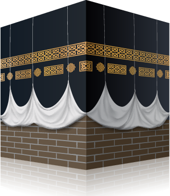

What is
Eid Al-Adha?

There are two key Eid’s (Celebration Festivals) in Islam: Eid Al-Fitr, which signifies the completion of the Holy Month of Ramadan; and Eid Al-Adha, the greater Eid, which follows the completion of the annual Hajj pilgrimage, at the time of Qurban (sacrifice).
The day of Eid-ul-Adha falls on the tenth day in the final (twelfth) month of the Islamic Lunar Calendar; Dhu-al-Hijjah. The day that celebrations fall on is dependent on a legitimate sighting of the moon, following the completion of the annual Holy Pilgrimage of Hajj - which is an obligation for all Muslim’s who fit specific criteria, one of the important Five Pillars of Islam.
The celebration of Eid-ul-Adha is to commemorate Prophet Ibrahim’s devotion to Allah SWT and his readiness to sacrifice his son, Ismail. At the very point of sacrifice, Allah SWT replaced Ismail with a ram, which was to be slaughtered in place of his son. This command from Allah SWT was a test of Prophet Ibrahim’s willingness and commitment to obey his Lord’s command, without question. Therefore, Eid-ul-Adha means the festival of sacrifice.
Depending on the country, the celebrations of Eid-ul-Adha can last anywhere between two and four days. The act of Qurban (sacrifice) is carried out following the Eid Salaah (Eid Prayers), which are performed in congregation at the nearest Mosque on the morning of Eid.
The act of Qurban consists of slaughtering an animal as a sacrifice to mark this occasion in remembrance of Prophet Ibrahim’s sacrifice for Allah SWT. This is also known as Udhiya
The sacrificial animal must be a sheep, lamb, goat, cow, bull or a camel.
The Qurban meat will be divided into three equal portions per share; one-third is for you and your family, one-third is for friends, and the final third is to be donated to those in need.
Traditionally, the day is spent celebrating with family, friends and loved ones, often wearing new or best attire and the giving of gifts.